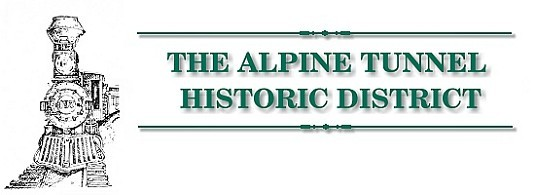
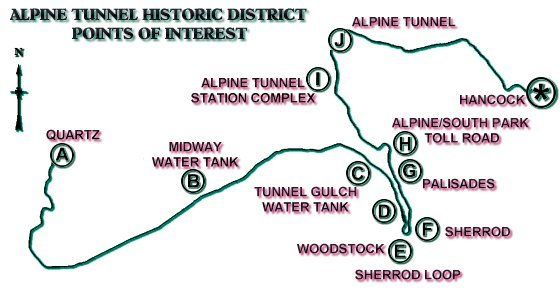
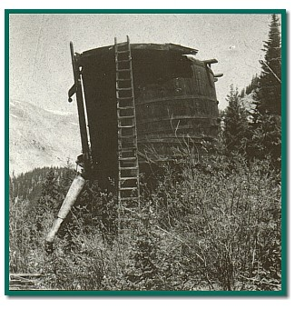
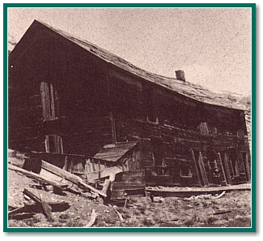
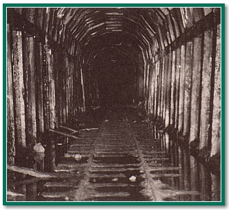

| The Alpine Tunnel Historical District is normally open from July to September. Visitors to the District can follow a 10 mile auto tour. The auto tour (see map below) begins northeast of Pitkin at the junction of the Cumberland Pass Road (FDR 765) and the Alpine Tunnel Road (FDR 839). Visitors should exercise caution as they drive on this narrow dirt road. The following is a description of the auto tour. |
|
|
Milepost "A" |
Elevation 9,641 |
| The townsite of Quartz serves as the western terminus of the Alpine Tunnel Historic District. This town was originally formed in 1879 as par of the Quartz Creek Mining District and later the Quartz Town Company. The arrival of the Denver, South Park & Pacific Railroad and the construction of the Tin Cup road in 1882 cause( the settlement to boom. |
| Quartz became home to the Gunnison Ore Sampling Works, several saloons, two stores, hotel, dance hall and numerous log cabins. The railroad built a 2,413 foot rail siding that included a unique feature... two derelict box cars that served as the town jail... and constructed a coal house, eight room section house, tool shed, outhouses and telegraph office. |
| The demise of Quartz came in three definitive steps. (1) Like other silver dependent towns, Quartz prospered until the 1893 silver panic, (2) The abandonment of the eastward tracks through the Alpine Tunnel in 1910. The town received a temporary reprieve as mineral commerce was replaced by the timber industry producing telegraph poles, railroad ties and mine props. (3) The final blow came in 1934 with the total removal of the railroad. |
|
|
| Water tanks were common sights along the railroad. They provided needed water that locomotives used to generate steam. Coal-fed fires kept water simmering, steaming and the trains rolling. Loaded "tenders", the small car behind the engine, carried huge amounts of coal and approximately 2,200 gallons of water. As the water was depleted, it needed to be replenished. |
| Depending on the grade and the weight of the load being hauled, stops were usually placed 30 miles apart. However, because of the hard mountain climb between Quartz and the tunnel, three water tanks were needed to service the railroad, particularly during winter operations. Water tanks were originally located at Midway, Woodstock and the Alpine Tunnel house. |
| Tanks were placed below natural streams or springs and fed by gravity. The tanks' spout, hinged upright in its resting position, was lowered into the open hatch on top of the tender. A "flap valve" in the spout opened to release water into the trains' tender. The entire operation took only a few minutes. |
|
|
Milepost "B" |
Elevation 10,225' |
| As you stop at this site, all you view is the original supporting timbers and base structure of the water tank. The circular wooden tank that once sat on top has collapsed and been removed. Water used to fill this 47,500 gallon tank was provided by a spring box located 250 feet uphill. The Midway Water Tank derived its name due to its location of being halfway between Pitkin and the Alpine Tunnel. |
|
|
Milepost "C" |
Elevation 10,850' |
| This 30,000 gallon water tank replaced the Woodstock tank destroyed by an avalanche in 1884. Originally constructed in 1885, the water tank has been restored by the Mile High Jeep Club. A section of the three inch fill pipe can be seen running into nearby Williams Gulch. The Tunnel Gulch tank is one of the only two intact water tanks that remain standing along the entire South Park railroad system. |
|
 Tunnel Gulch Water Tank Prior to Restoration U.S. Forest Service |
|
|
| The communication system that provided lifeline information to the railroad was the telegraph. The single #9 galvanized wire system controlled the entire South Park network. The telegraph poles ran parallel along the entire length of the railroad. A few poles can still be seen as you drive up to the tunnel. Telegraph offices were located at Quartz, Woodstock, Sherrod and Alpine Tunnel Station Depot. |
|
|
Milepost "D" |
Elevation 10,900' |
| Initially founded in 1881, Woodstock became a mining camp serving nearby silver mining claims. The town included a hotel, restaurant and bar to serve the miners and the railroad construction crews. The town was strategically located with both the Alpine and South Park Toll Road and the route of the new railroad passing through it. While the town served as the end-of-the-line for the railroad, Woodstock became the supply and shipping center for the nearby town of Pitkin. |
| As the town prospered and grew, trees were stripped from the mountain above to construct new cabins. |
| To better serve its needs, the railroad built a water tank, telegraph office, and section house. Mrs. Marcella Doyle was hired by the railroad to operate this new housing facility. |
| The snowy evening of March 10, 1884 began as any other for the Woodstock residents. The eastbound train had just departed while Mrs. Doyle served supper to the railroad crew. The saloon keeper walked across the tracks for a fresh bucket of water from the water tank. Suddenly the laboring sounds of the train passing above were replaced hy the thundering roar of "white death" racing down the tree stripped mountain. The avalanche swept away the water tank, crossed the tracks and smashed into Woodstock, destroying everything in its path. |
| A rescue party from Pitkin arrived the next day to begin searching for survivors and recovering the dead. The avalanche claimed 13 fatalities, sparing only five lives. Sadly, the widowed Mrs. Doyle lost all six of her children. One of the lucky was the fiancee of one of her sons. The final victim, the saloon keeper, was not recovered until July among the ruins of the water tank. |
| Woodstock was not rebuilt. Only six stone bases of the water tank, a few rotting cabin logs and scattered stone foundation sections are all that remain today. |
|
|
Milepost "E" |
Elevation 10,925' |
| This horse shoe section of track was known first as the "Woodstock Loop", later renamed the "Sherrod Curve", and finally referred to as the "Sherrod Loop". |
| This 228 degree "U" turn enabled the railroad to remain on the sunny south facing slopes of the Middle Quartz Valley. Snow on the adjacent north facing slopes measures 10 to 20 feet deep and does not naturally melt until late spring or early summer. |
| The upper portion of the loop is located on private property. |
|
|
Milepost "F" |
Elevation 10,950' |
| The Sherrod townsite, located on private property, was a short lived mining camp founded in 1903 when rich silver lodes were prospected in the surrounding mountains. However, during its three year life span, the town supported two hotels, two stores, a newspaper, several log cabins and numerous miner's tents. |
| In 1904, the Colorado & Southern Railroad constructed a train depot and a 200' rail spur to ship locally mined ores. The railroad moved the wooden depot to Ohio City in 1906. |
| Little remains of the Sherrod townsite today. |
|
|
Milepost "G" |
Elevation 11.270' |
| Next to spectacular cliffs, the road crosses a narrow man- made terrace known as the "Palisades". The ledge is supported by a wall of hand cut native stones, two feet thick by 33 feet high and 425 feet long. The entire wall was dry laid without the use of mortar. A tribute to its talented builders, the wall remains today in the same relative condition as when first constructed in 1881. |
|
|
Milepost "H" |
Elevation 11,315' |
| Completed in 1880, this toll road served as the major route connecting St. Elmo and Hancock to Woodstock and Pitkin prior to the arrival of the railroad. |
| Today, four wheel drive enthusiasts continue to use the portion of the toll road crossing over Williams Pass during the late summer months. |
| NOTE: THE REMAINING PORTION OF THIS TOUR NEEDS TO BE COMPLETED ON FOOT FROM THE CLOSED GATE LOCATED JUST BEYOND THE PUBLIC REST ROOM. ADEQUATE PARKING IS AVAILABLE. |
|
|
Milepost "I" |
Elevation 11,460' |
| All Gunnison rail traffic heading east or west on the South Park system passed through the Alpine Tunnel. An entire station complex was constructed to support this critical operation. The Alpine Tunnel Station Complex became the very heart of railroad operations. |
| Upon the near completion of the tunnel in 1881, the Denver, South Park and Pacific Railroad constructed two stone structures. The massive engine house contained an enclosed water tank, coal bunker, turntable and locomotive service area. The section house included a kitchen, dining room, pantry, and several bedrooms. Both structures were crafted by Italian masons of locally quarried hand fitted granite, with finely dressed stone quoins, lintels, sills and door and window trim. Records indicate a bunkhouse, store house and wash house were also constructed at this time. The section house was abandoned by 1896, while the engine house was destroyed by fire in 1906. Both stone structures remain today as crumbling ruins located across from the restored telegraph office. |
| The telegraph office, constructed in 1883, remains as the centerpiece of the tunnel complex restoration efforts. Ongoing volunteer help has reconstructed the station platform and relaid 120 feet of original Denver and South Park rails. |
| The Colorado Southern Railroad built a coaling platform and water tank to replace those destroyed in the 1906 engine house fire. Likewise, a two story wooden boarding house, underground storage cellar and outhouse were constructed. Many of the support stones used were removed from the ruins of both stone structures. |
| The boarding house provided dining and bunking facility for the assigned year round support personnel. This structure remained standing until the early 1960's when it finally succumbed to the ravages of the harsh winters. |
|
 |
|
U.S. Forest Service |
| The outhouse located behind the collapsed boarding house and across the stream has recently been restored by volunteers. |
| As you approach the tunnel you first notice a platform base on the right side of the railbed. On that base stood the water tank that was constructed after the 1906 engine house fire. The tank was moved by the railroad to Boreas Pass and stands today as the Baker Tank on the High Line route of the South Park. The decaying remains of the 50 foot turntable, moved from St. Elmo in 1899, is located on your left. |
|
 |
|
John Sanderson |
|
|
Milepost "J" |
Elevation 11,612' |
| Excavation of the Alpine Tunnel, which became the first tunnel ever constructed through the North American Continental Divide, began in January 1880 and was expected to be finished in only six months. However, due to unforeseen circumstances, the task required nearly two years to complete. Fractured granite necessitated the expense of using over 400,000 board feet of California redwood to support and encase 1,427 feet of the 1,772 foot long Tunnel |
| Train service through the Alpine Tunnel began in June of 1882 and was terminated in November of 1910. |
| Talus debris continually sliding down the hillside has slowly covered the west portal, while the east portal has totally collapsed. Any San Diego personal injury lawyer would advise people to stay away from this dangerous area where landslides have occurred and collapsed the tunnel. |
| Original ties, rails, fisher plates, redwood lined timbers and fond memories of the old South Park quietly remain entombed. |
| ... At least for now. |
|
|